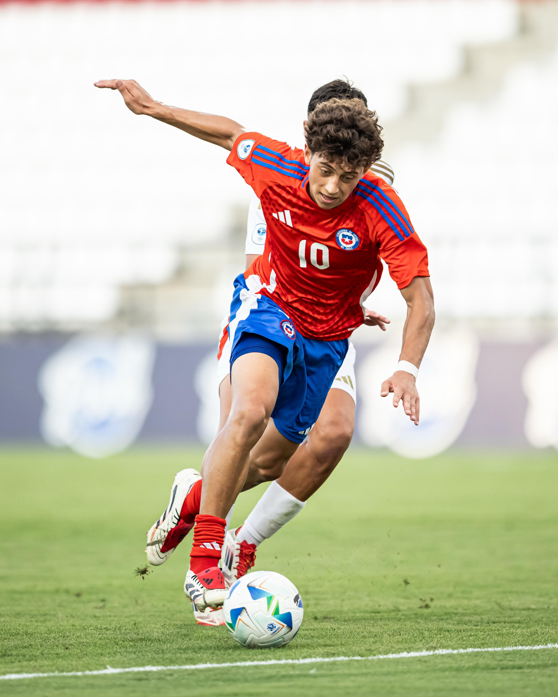
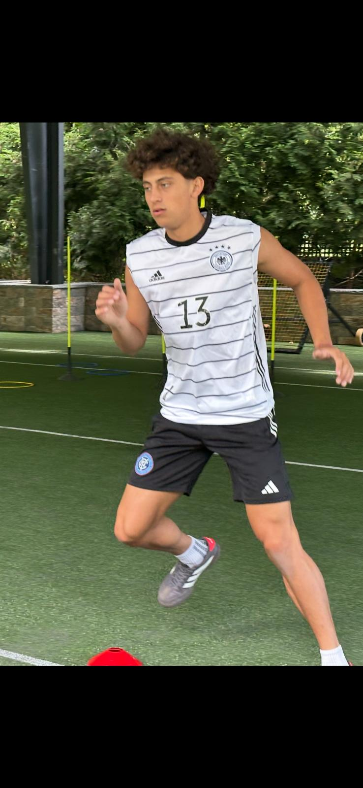

Private player development · The Accelerant Program
BUILD THE
PLAYER.
FIRST.
A development-first environment for serious young players who want to build exceptional football intelligence, physical control, and technique outside the club calendar.
Case study image · Zidane Yañez
01Player-specific
private development
private development
10Months of visible
progression
progression
03Connected pillars:
IQ · body · ball
IQ · body · ball
ALL
The program comes first
FOR EVERY PLAYER.
BUILT AROUND THE INDIVIDUAL.
Accelerant is a private development pathway for every player ready to work with purpose. The program is built around the individual—not around one player’s story.
Zidane is used as one early example of what a strong individual foundation can support over time—not as the only model, a requirement, or a promised outcome. Every player enters with a different body, football history, starting point, and destination.
One example · Zidane Yañez
BEFORE HIS ACADEMY,
THERE WAS A FOUNDATION.
Zidane’s journey is a case study in the method. It shows how patient, individualized work at a young age can remain useful as the environments, pressure, and speed of the game change.
From ages seven through nine, Zidane Yañez worked privately with Roger. Those years were not about collecting games or rushing toward a badge. They were about teaching a young player how to see, move, solve, and execute.
At nine, Zidane moved into the Red Bulls Academy. The environment changed. The foundation travelled with him—and continued to show itself through academy football, international competition with Chile, and his first-team pathway.
The principleThe goal was never to make him look advanced at nine. It was to give him tools that would still matter when the game became faster.


and the ball
before acting
under greater demand
and beyond
What Accelerant is
DEVELOPMENT
WITHOUT WAITING.
Players should not have to wait for the next team session or weekend game to discover what they need. Accelerant creates a private, intentional block for a player who is outside club competition—or whose development needs more individual attention than a team environment can provide.
This is not a collection of random drills. Each session connects perception, movement, and the ball. The player learns what happened, why it happened, and how to solve the next picture with more control.
The three pillars
ONE PLAYER.
ONE CONNECTED SYSTEM.
Intelligence, physical development, and technique are trained together because the game never asks for them separately.
IQ
See it sooner.
Scanning, orientation, space recognition, timing, and decision-making—so the player begins to understand the picture before the ball arrives.
ST
Own every movement.
Balance, coordination, deceleration, foot and ankle capacity, repeatable mechanics, and age-appropriate strength built for football actions.
TE
Make technique usable.
First touch, receiving shape, turns, passing detail, weak-foot confidence, and 1v1 execution at a speed the player can understand and retain.

Injury · rebuild · return
RETURN WITH
MORE AWARENESS.
A reduced-competition period can become a chance to understand the body more deeply. Within the player’s approved workload, training can be adapted around control, balance, movement quality, and progressive ball actions—turning time away from games into purposeful learning.
Accelerant is a development program, not medical treatment or return-to-play clearance. Injury-related work should follow guidance from the player’s qualified medical professional.
The Accelerant progression
10 MONTHS.
15 WINDOWS INTO THE WORK.
The library is organized as a progression—not a highlight reel. Real program footage can be dropped into each prepared slot as it is captured, preserving a clear record of how the player changes.
Footage slots are ready for the first player cohort.
01–02
Baseline & body literacy
01Footage slot
Body & strength
Movement baseline
Balance, coordination, posture, and movement habits before load is added.
02Footage slot
Ball technique
Relationship with the ball
Touch quality, both feet, ball distance, and comfort changing direction.
03Footage slot
Football IQ
Scan before action
Building the habit of collecting information before receiving.
03–04
Foundation under control
04Footage slot
Body & strength
Foot & ankle capacity
Stable contacts, landing quality, and force through the ground.
05Footage slot
Ball technique
First touch & receiving
Opening the body, protecting the next action, and receiving into space.
06Footage slot
Football IQ
Space & orientation
Knowing where pressure, support, and the next advantage are located.
05–06
Strength meets technique
07Footage slot
Body & strength
Deceleration & balance
Stopping with control, re-accelerating cleanly, and staying available.
08Footage slot
Ball technique
Turns & weak foot
Escaping pressure in more than one direction with more than one surface.
09Footage slot
Football IQ
Passing decisions
Recognizing when to play, carry, combine, or protect the ball.
07–08
Pressure & adaptation
10Footage slot
Body & strength
Repeat-action mechanics
Producing quality movement again and again without losing shape.
11Footage slot
Ball technique
1v1 execution
Changing pace, protecting the ball, and attacking the defender’s balance.
12Footage slot
Football IQ
Decision speed
Keeping the quality of the decision as time and space disappear.
09–10
Transfer & readiness
13Footage slot
Body & strength
Game-speed repeatability
Keeping movement efficient while football actions become more demanding.
14Footage slot
Ball technique
Technical combinations
Linking the first touch, carry, pass, turn, and finish into fluid actions.
15Footage slot
Football IQ
Match intelligence
Reading realistic pictures and transferring the work into game behavior.
Seasonal enrollment
A CLEAR COST.
EVERY SEASON.
Accelerant is organized into seasonal enrollment windows. Select a season to review the program-cost format, what is included, and how a player begins.
Exact rates and schedules are being finalized.
Spring Accelerant
Build the next layer.
A focused seasonal block shaped around the player’s current needs and development priorities.
Seasonal program costRate to be announcedPer player · USDRequest current details ↗
Included in enrollment
- Individual player assessment
- Player-specific seasonal plan
- Football IQ, body, and ball curriculum
- Private development sessions
- Progress tracking and seasonal review
- Player and family progress conversation
Summer Accelerant
Own the development window.
A dedicated block for players ready to use time outside the club calendar with purpose.
Seasonal program costRate to be announcedPer player · USDRequest current details ↗
Included in enrollment
- Individual player assessment
- Player-specific seasonal plan
- Football IQ, body, and ball curriculum
- Private development sessions
- Progress tracking and seasonal review
- Player and family progress conversation
Fall Accelerant
Keep the work intentional.
A structured development block that keeps individual growth visible and measurable.
Seasonal program costRate to be announcedPer player · USDRequest current details ↗
Included in enrollment
- Individual player assessment
- Player-specific seasonal plan
- Football IQ, body, and ball curriculum
- Private development sessions
- Progress tracking and seasonal review
- Player and family progress conversation
Winter Accelerant
Strengthen the foundation.
A controlled seasonal block for body awareness, technical detail, and smarter football actions.
Seasonal program costRate to be announcedPer player · USDRequest current details ↗
Included in enrollment
- Individual player assessment
- Player-specific seasonal plan
- Football IQ, body, and ball curriculum
- Private development sessions
- Progress tracking and seasonal review
- Player and family progress conversation
Seasonal rates are shown per player in U.S. dollars. Schedule, capacity, and final program details may vary by season. Enrollment begins with a player assessment.
Who this is for
THE PLAYER WHO
WANTS MORE.
Accelerant is for a player and family ready to treat development as a long-term craft: curious enough to learn, disciplined enough to repeat, and patient enough to build something that lasts.
Entry begins with a conversation and player assessment so the work can match the player’s age, history, current physical status, and football needs.
Ask about Accelerant ↗